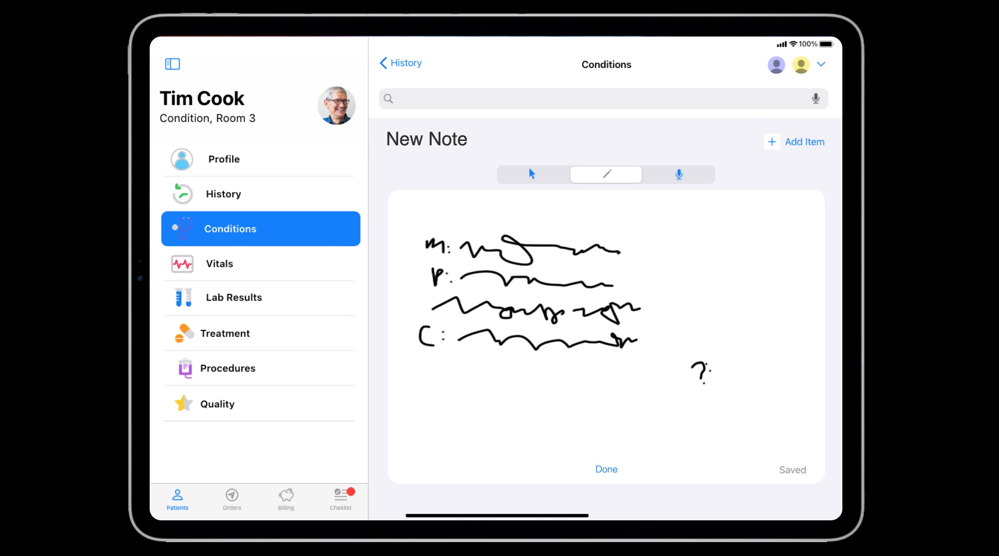

How Apple may improve electronic health systems (EHS)
Design / Case Study
Adobe XD / Axure
iOS Tablet
Developed concept to envision how Apple may improve our healthcare system. Conducted end-to-end design process to produce a high-fidelity prototype of Tami (Translational Artificial Medical Intelligence), cousin of Siri. Tami addresses physician burnout and administrative inefficiencies by translating human handwriting into activities within an EHS.
Inspired by Apple’s presentation style at WWDC, I developed the storyline for Tami as if I was introducing her to the world for the first time.
